We saw at the beginning that some stars appear to change their brightness over time, either periodically or in sudden events. In this chapter we will look at the different types of variability and how we can explain them with our understanding of stellar physics. We will see that variable stars can be valuable sources of information that is difficult to get any other way.
4 Variable Stars Introduction
By ‘variable’ we mean that the star’s flux changes with time
We observe this by measuring changes in apparent magnitude
What can cause the magnitude to change?
It can be a real variation because the star itself changes, or an apparent variation, e.g. something moves in front of the star and blocks its light fully, or partially, from us
The variation can be irregular or regular.
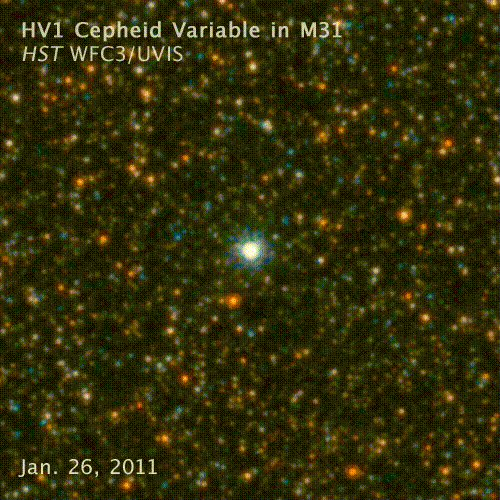
Figure 4.1: HV1 Cepheid variable star in M31.
5 Irregular variable stars
5.1 Irregular variable stars: Novae
All novae exist in binary systems in which material is transferred from one star to a white dwarf
As more matter is piled on, the gas gets hotter and more dense, until the thermonuclear fusion onset causes a bright outburst
Novae are sometimes called cataclysmic variables
They flare in brightness irregularly, sometimes only once
The interval between flares depends on the strength of the outburst: usually, the stronger the outburst, the longer the time before the next one
Their luminosity may increase by a factor of 1000 over a period of ~ a week and then decay slowly over months or years
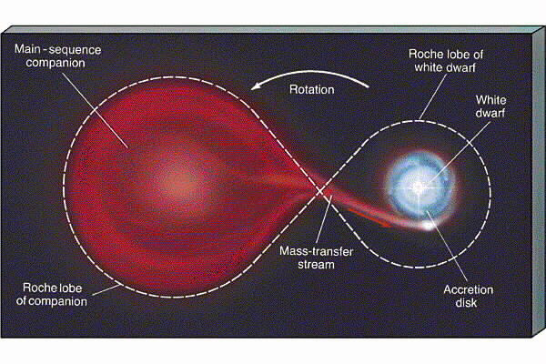
Figure 5.1: Mass transfer in a binary system from the main sequence companion to the white dwarf, leading up to a nova.
5.2 Irregular Variable Stars: T Tauri Stars
This is a class of irregular variable stars named after their prototype: T Tauri in the constellation of Taurus.
Their luminosity increases by a factor of three in a few days
T Tauri stars are very young stars – protostars that are powered by gravitational energy as they contract and move towards the Main Sequence
We will see where they fit into the stellar evolution later
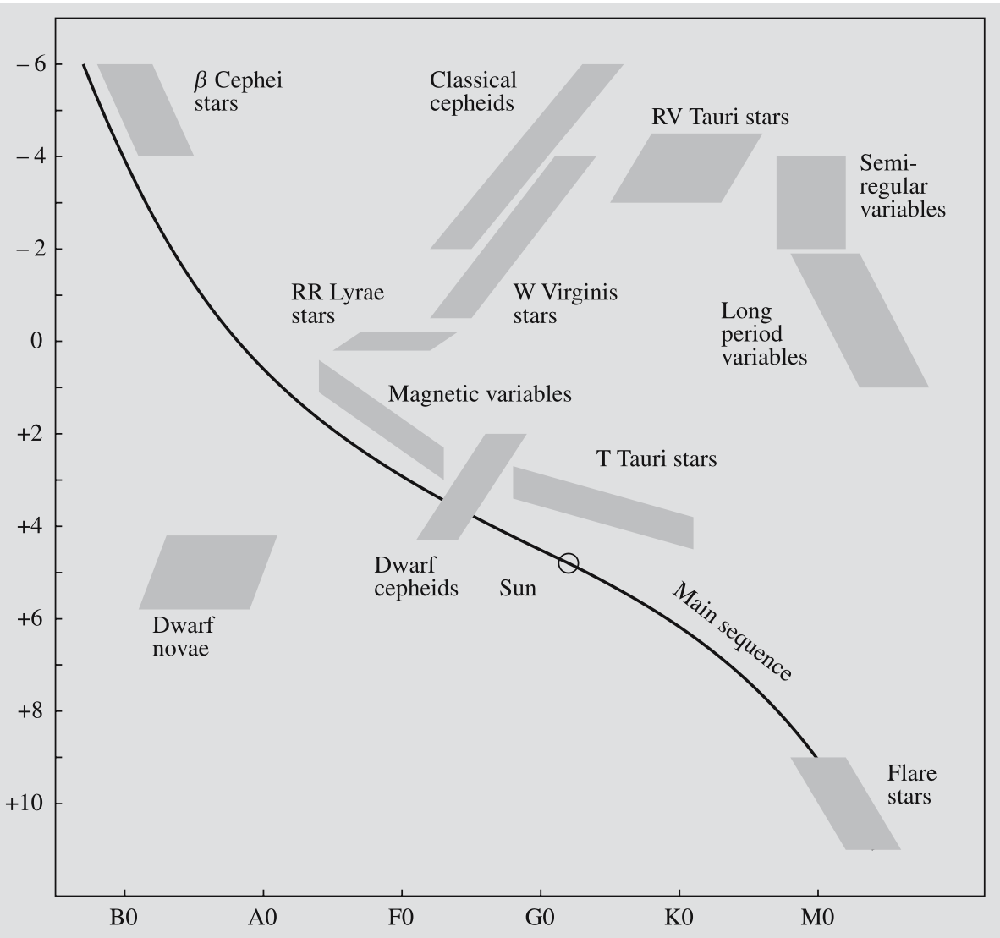
Figure 5.2: Location of variables in the HR diagram.
5.3 Irregular Variable Stars: Supernovae
Supernovae are end states of very massive stars, exploding after the nuclear fuel is exhausted
The core of a star collapses and the outer layers are blown off
What remains is: a small dense neutron star, surrounded by expanding spheres of circumstellar matter, or a black hole, or a diffuse nebula
We will study these in detail when we revisit the end stages of stellar evolution.
5.3.1 Introduction to supernovae types
Supernovae are classified according to observational features. There are two main classes of supernovae, determined by the chemical elements present in their spectra:
Type I: do not contain Hydrogen. These are further divided into three subgroups: Ia (silicon is present), Ib (helium is present, but no silicon), and Ic (ittle helium, no silicon)
Type II: their spectra contain Hydrogen lines.
We will learn how to classify them in chapter 7.
5.3.2 Type Ia Supernovae
Type Ia supernovae are important because they all have nearly equal brightness
They are “standard candles” which can be used to measure distance
This is used for cosmology!
In 2014 an example of such a Type Ia supernova (SN2014J) was seen in M82 – 11.4 million light years from us.
This was the brightest SN seen since SN1987A
We would only expect one such Type 1a SN in M82 every few decades
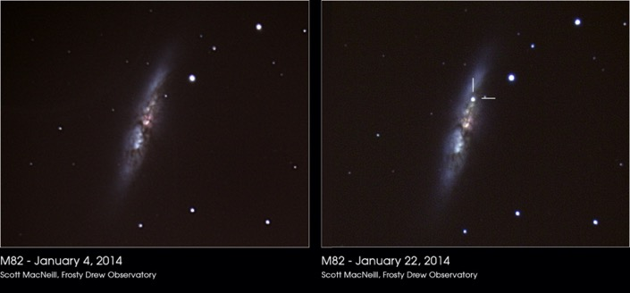
Figure 5.3: SN2014j
5.3.3 Type II supernovae: Supernova 1987a
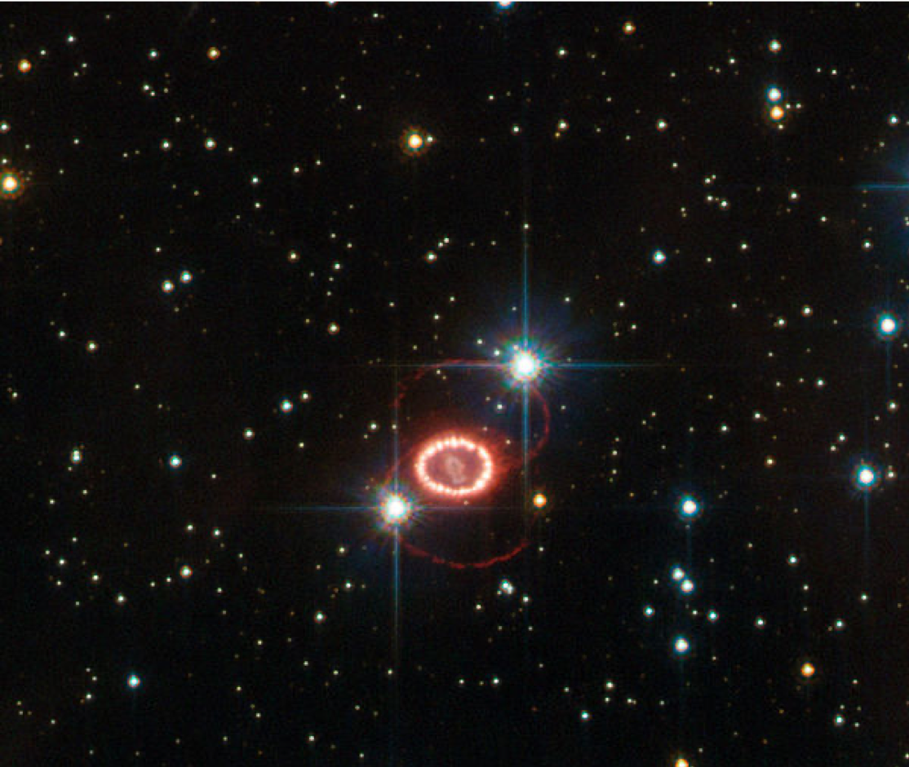
Figure 5.4: Supernova 1987a.
SN1987a is the closest supernova of modern times
Exploded on February 23, 1987 in the Large Magellanic Cloud
Because of its closeness – only 168,000 light years – SN 1987A is the best-studied supernova of all time
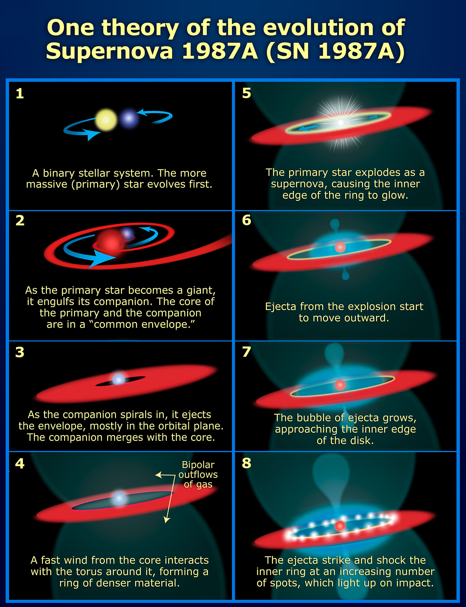
Figure 5.5: One of the theories for the evolution of the supernova 1987a. Credit: NASA, ESA, and A, Feild (STScI)
6 Regular variable stars
Regular variables exhibit flux variations that follow a regular repeating pattern. Examples are: RR Lyrae, Miras, Cepheids.
We will look more closely at Cepheids Named after the star d Cephei which was first observed in 1786.
6.1 Cepheid Variable Stars
Cepheids are very luminous giant or supergiant stars.
Luminosity varies by factors of up to ten
Depending on the star, this variation repeats over periods between 1 and 100 days.
Example: Polaris (the Pole Star) has a period of about 4 days and changes its luminosity by about 5% over that period (see Figure 6.1).
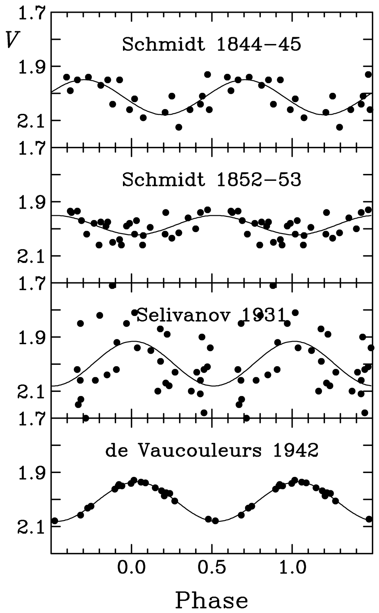
Figure 6.1: V-band apparent magnitude of Polaris. Image credit: Turner et al, Period Changes of Polaris, Publications of the Astronomical Society of the Pacific, Vol. 117 No. 828 (2005)
Cepheid variables pulsate with a very regular period. Radial pulsation results in a regular pulsation of:
Cepheid variables sit in a region of the HR diagram called the instability strip (Figure 6.3)
Lies at roughly right-angles to the main sequence, toward the direction of the Giant branch
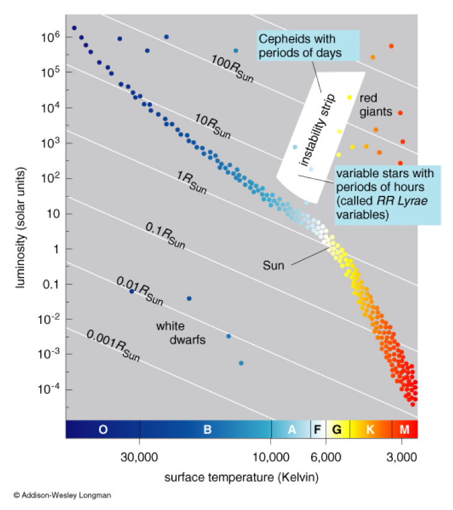
Figure 6.3: Instability strip.
6.1.1 Cepheids Period-Luminosity relation
For Cepheids the period of the pulsation depends only on the average luminosity of the star.
The longer the pulsation period \(P\), the more luminous the star.
There are two types, with period-magnitude relations:
Type I - massive, young cepheids: \(M=-(1.8 + 2.4\log_{10} P)\)
Type II - older, smaller cepheids: \(M=-(0.4 + 2.4\log_{10} P)\),
where \(P\) is the period in days, and \(M\) is the absolute magnitude of the star (see Figure 6.4).
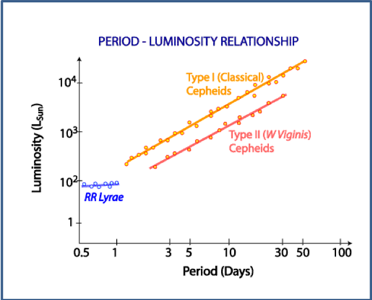
Figure 6.4: Period-Luminosity relation of Cepheid variable stars.
6.1.2 Cepheid variable stars as distance indicators
If you observe a Cepheid and measure its period of oscillation then you can find the intrinsic luminosity from the period-luminosity relationship
You can measure the flux \(F\) from the Cepheid
You know how flux is related to luminosity \(L\): \[F=\frac{L}{4\pi D^2}\]
Therefore, you can calculate the distance, \(D\) , to the Cepheid.
7 Binary stars
In Figure 3.1 of Chapter 1 we saw that the stars we considered as examples are classified as ‘double stars’. Stars are often found in pairs, at least half the “stars” we see are actually binary systems with two stars orbiting around each other. Since we know the laws of orbital motion, this gives us a great new avenue to explore what we can learn about these stars from the observations. They can give us some direct measurements of mass that are hard to come by without the mass-luminosity relationship.
7.1 Orbital analysis and masses determination
We know how to analyse orbits of planets in our solar system or satellites round the Earth.
For these cases one mass is huge compared to the other, so we approximate and deal with the orbit as if the larger mass is stationary.
Treatment of the dynamics of binary systems is only slightly harder because the masses of the components can be more comparable. In such a binary system, the stars orbit about their centre of mass – a point in between them.
Newton and Kepler’s laws still apply:
The centre of mass does not move (Newton 1)
Orbital motion is in a plane (conservation of angular momentum)
Both bodies feel the same attractive force, \(F=\frac{Gm_1m_2}{r^2}\)
Orbits are ellipses, with the centre of mass at one focus (Kepler 1)
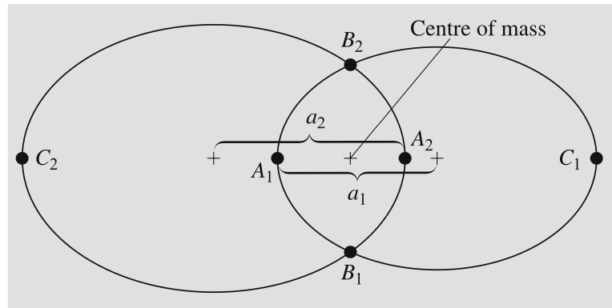
Figure 7.1: Orbits of a binary system. The centre of mass lies on the line connecting the two stars and the two stars orbit around it. \(A_1\), \(A_2\) denote the positions of the two stars at a given time. Same for the points B and C. \(a_1\) and \(a_2\) are the semi-major axes of the orbital ellipses.
A line between the two stars always passes through the centre of mass.
Here (and below) you can try a simulator to visualise how the distances \(r_1\), \(r_2\) of the masses from the center of mass of the system vary, when you change \(m_1\) and \(m_2\).
If the masses are equal, the centre of mass is half way between them.
If the two masses are different, the centre of mass is closer to the heavier object.
Note that in Equation 7.2, the total mass \(m_1+m_2\) appears, where if \(m_1\gg m_2\) one can be neglected in the planetary motion form of the law - c.f. Dynamical Astronomy. Also, \(a=a_1+a_2\) is the semi-major axis of the reduced mass.
Assume that we observe a binary system and the orbital plane is perpendicular to our line of sight
If the distance \(d\) to the binary is known, and if we measure the angular separation of the stars from the centre of mass, \(\alpha_1\) and \(\alpha_2\), then we can find the semi-major axes from \[
\alpha_1 = \frac{a_1}{d}, \quad \alpha_2 = \frac{a_2}{d}
\tag{7.3}\]
If we also measure the period \(P\), from Equation 7.2 we can find the total mass of the system \(m_1+m_2\).
Centre of mass dynamics tells us: \(m_1a_1 = m_2a_2\)
For visual binaries, we can measure both \(a_1\) and \(a_2\), so we can find \(m_1/m_2\)
Since we also know the total mass, after some algebra, we can deduce the individual masses \(m_1\) and \(m_2\)
This is simple for a face-on binary but in general one has to also measure the inclination.
Determination of mass is a key result from binary star observations.
8 Binary systems classes
There are 4 main classes of binaries:
Visual binaries – where with telescopes it is possible to resolve the two components
Astrometric binaries – where we cannot resolve the individual stars but where we see a periodic wobble of the observed overall position
Spectroscopic binaries – where the components are not resolvable but where Doppler shifts in their spectral lines reveal that there are two stars orbiting their centre of mass
Eclipsing binaries – where we cannot resolve the individual stars but where we see a periodic brightening and dimming
8.1 Visual Binaries
Visual binaries tend to be relatively near to us, otherwise we could not resolve the components (remember the limitations of the parallax).
~1000 visual binaries have been identified
long-term (many years) observations may be needed to establish the orbit
A good example is 70 Ophiuchi in Figure 8.1: you need to be patient!
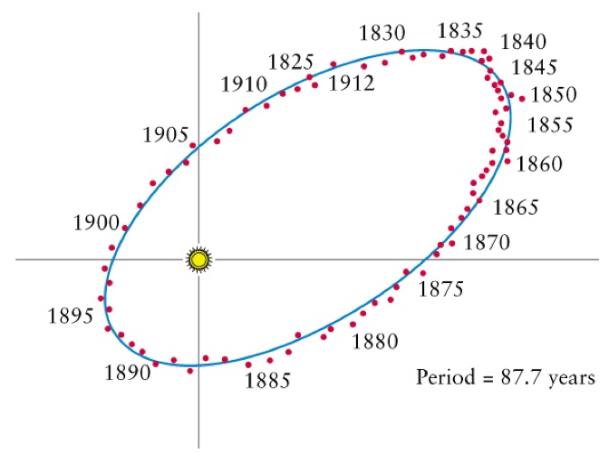
Figure 8.1: Example of visual binaries: 70 Ophiuchi.
8.2 Astrometric binaries
If one of the stars is much brighter than the other, it might be possible to only see one of them. In Chapter 1 we saw the case of a binary system: Sirius A and Sirius B (Figure 5.1), where Sirius B is much smaller than Sirius A. The presence of a binary companion can be deduced from the apparent wobble of the star as it moves in its elliptical orbit. This situation is described as an astrometric binary.
An example of the motion of the Sirius binary system can be seen in Figure 8.2.
Sirius can now be resolved visually, but it was initially detected as an astrometric binary.
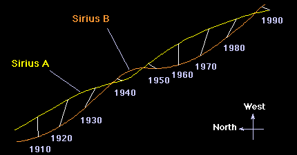
Figure 8.2: Motion of the Sirius binary system in over 80 years.
8.3 Spectroscopic binaries
If the stars are too close together to resolve separately, we can still deduce whether the system is a binary by measuring spectral lines. Light from each star is doppler shifted as they move toward and away from us.
When a star is moving away from us, its light is shifted toward the red end of the spectrum (redshifted)
When a star is moving toward us, its light is shifted toward the blue end of the spectrum (blueshifted)
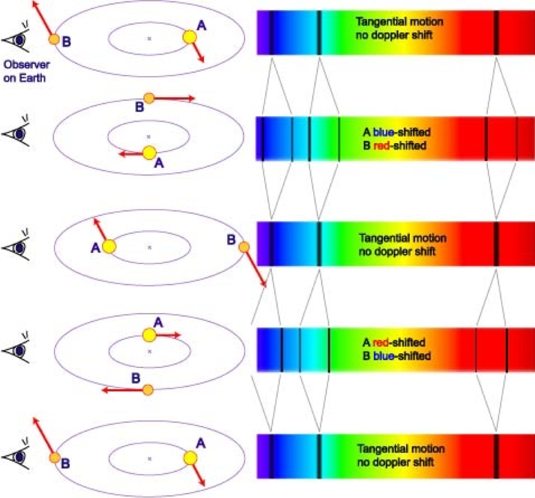
Figure 8.3: Schematic mechanism of doppler shift of spectral lines in spectroscopic binary.
The speed toward and away from us is reduced by the inclination of the orbital plane. \[
v= v_{true} \sin\iota
\tag{8.1}\] where \(\iota\) is the inclination angle between the orbital angular momentum vector and our line of sight.
For a spectral line with wavelength \(\lambda_0\) in the reference frame of the star, the doppler shift causes a shift of size \(\delta\lambda\):
\[
\frac{\delta\lambda}{\lambda_0}=\frac{v}{c}
\] where \(v\) is the speed of the source toward or away from us along the line of sight.
Given the orbital period \(P\), the true orbital velocity (for the star with index \(i=1,2\)) is \[
v_{true,i}=\frac{2\pi a_i}{P},
\tag{8.2}\]
so using Equation 8.1 we find the observed speeds for the two stars
\[
\frac{v_1}{v_2}=\frac{a_1}{a_2}=\frac{m_2}{m_1},
\tag{8.4}\] where in the last passage we used Equation 7.1.
The \(\sin\iota\) term from inclination cancels out in Equation 8.4!
In order to find the individual masses we need a way to measure \(m_1+m_2\) as before.
The semi-major axis of the reduced system is \(a=a_1+a_2\)
Using Equation 8.3 we can write \[
v_1+v_2 = \frac{2\pi a \sin\iota}{P}
\tag{8.5}\]
Rearranging this for \(a\) and using in the Kepler’s third law (Equation 7.2) we find \[
m_1+m_2 = \frac{P}{2\pi G}\left(\frac{v_1+v_2}{\sin\iota}\right)^3.
\tag{8.6}\]
Unfortunately, the \(\sin\iota\) term doesn’t cancel out here. If we don’t precisely know the inclination then we have an uncertainty on the total mass.
So we have this limitation in our ability to deduce the individual masses.
8.4 Eclipsing binaries
Eclipsing binaries are a type of regular variable star
The presence of a binary can be deduced by measureing the light curve (magnitude over time)
Simulation of eclipsing binaries and their light curve in time.
The stars will eclipse each other only if we are viewing the system near edge-on (\(\iota \approx 90^\circ\))
So we can safely assume that we know the inclination
If we can also measure the doppler shift spectroscopically, then we can measure the individual masses using the spectroscopic method
8.4.1 Primary and secondary minima
Figure 8.4: Light curve in eclipsing binaries.
Which eclipse will produce the greater reduction in the brightness (primary minimum)?
We can write the flux from each star as \[F_1=\frac{4\pi r_1^2 \sigma T_1^4}{4\pi d^2}\]\[F_2=\frac{4\pi r_2^2 \sigma T_2^4}{4\pi d^2}\]. Assume for now that \(r_1>r_2\), i.e. star 1 is bigger.
The smaller star obscures a chunk of the larger, but it adds its own light. If it is higher temperature then it will be replaced by a brighter patch.
If \(T_2>T_1\), then \(F' > F_1\): secondary minimum - the cooler star moves behind the hotter
If \(T_2<T_1\), then \(F' < F_1\): primary minimum - the hotter star moves behind the cooler.
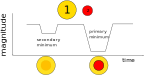
Figure 8.5: Light curve in eclipsing binaries. When the smaller star partially eclipses the bigger one, it replaces the eclipsed section with its brightness.
where \(T_1\) is the temperature of the larger star, and \(T_2\) the smaller. From the measure of the fluxes we can find the ratio of the temperatures.
So in eclipsing, spectroscopic binaries we can get
the orbital period (from either light curve or spectroscopy)
speed of the stars in orbit (from spectroscopy), which can be used to find the size of the orbit
there is enough information to calculate the mass of the two stars.
The light curve gives us even more information, allowing us to compute the size of each star! This can be done by measuring the time of the transit, and combining with the speed measured via doppler line shift.
9 Recap
Variable stars can be due to changes in the stars composition/dynamics or can be apparent, e.g. due to something eclipsing the star
Variable stars can be irregular (e.g. novae, T Tauri stars, supernovae) or regular (e.g. Cepheids)
The pulsation period in Cepheids is directly proportional to their luminosity
The period-luminosity relationship in Cepheids allows to easily find their distance
Most stars consist of binary systems
From the orbital analysis of binary systems we can find the individual masses of the two stars
Binary stars are divided in 4 classes: visual, astrometric, spectroscopic, eclipsing
Even when a binary system can not be resolved, we can guess that is the case by looking at other effects such as ‘wobbling’ of the star, doppler shift of the spectral lines and minima in light curves.
Source Code
---title: Variables and binariesauthor: name: Dr Rosaria Lena affiliation: rosaria.lena@glasgow.ac.ukdate: last-modifieddate-format: longaffiliation-title: emaildescription: _Lecture 6-7_ (part 1.3). title-block-banner: truejupyter: python3execute: echo: true freeze: auto--------------We saw at the beginning that some stars appear to change their brightness over time, either periodically or in sudden events. In this chapter we will look at the different types of variability and how we can explain them with our understanding of stellar physics. We will see that variable stars can be valuable sources of information that is difficult to get any other way.# Variable Stars Introduction- By ‘variable’ we mean that the star’s flux changes with time- We observe this by measuring changes in apparent magnitude_What can cause the magnitude to change?_- It can be a real variation because the star itself changes, or an apparent variation, e.g. something moves in front of the star and blocks its light fully, or partially, from us- The variation can be _irregular_ or _regular_.{#fig-cepheid-variable-gif}# Irregular variable stars## Irregular variable stars: Novae- All novae exist in binary systems in which material is transferred from one star to a white dwarf- As more matter is piled on, the gas gets hotter and more dense, until the thermonuclear fusion onset causes a bright outburst- Novae are sometimes called cataclysmic variables- They flare in brightness irregularly, sometimes only once- The interval between flares depends on the strength of the outburst: usually, the stronger the outburst, the longer the time before the next one- Their luminosity may increase by a factor of 1000 over a period of ~ a week and then decay slowly over months or years{#fig-nova-mass-transfer}## Irregular Variable Stars: T Tauri StarsThis is a class of irregular variable stars named after their prototype: T Tauri in the constellation of Taurus.- Their luminosity increases by a factor of three in a few days- T Tauri stars are very young stars – _protostars_ that are powered by gravitational energy as they contract and move towards the Main Sequence- We will see where they fit into the stellar evolution later{#fig-variables-hr}## Irregular Variable Stars: Supernovae- Supernovae are end states of very massive stars, exploding after the nuclear fuel is exhausted- The core of a star collapses and the outer layers are blown off- What remains is: a small dense neutron star, surrounded by expanding spheres of circumstellar matter, or a black hole, or a diffuse nebulaWe will study these in detail when we revisit the end stages of stellar evolution.### Introduction to supernovae typesSupernovae are classified according to observational features.There are two main classes of supernovae, determined by the chemical elements present in their spectra: - Type I: do not contain Hydrogen. These are further divided into three subgroups: Ia (silicon is present), Ib (helium is present, but no silicon), and Ic (ittle helium, no silicon) - Type II: their spectra contain Hydrogen lines.We will learn how to classify them in chapter 7.### Type Ia Supernovae- Type Ia supernovae are important because they all have nearly equal brightness- They are "standard candles" which can be used to measure distance- This is used for cosmology!In 2014 an example of such a Type Ia supernova (SN2014J) was seen in M82 – 11.4 million light years from us.- This was the brightest SN seen since SN1987A- We would only expect one such Type 1a SN in M82 every few decades{#fig-sn2014j}### Type II supernovae: Supernova 1987a{#fig-sn1987a}- SN1987a is the closest supernova of modern times- Exploded on February 23, 1987 in the Large Magellanic Cloud- Because of its closeness – only 168,000 light years – SN 1987A is the best-studied supernova of all time{#fig-sn1987a-theory}# Regular variable starsRegular variables exhibit flux variations that follow a regular repeating pattern. Examples are: RR Lyrae, Miras, Cepheids.We will look more closely at CepheidsNamed after the star d Cephei which was first observed in 1786.## Cepheid Variable StarsCepheids are very luminous giant or supergiant stars.- Luminosity varies by factors of up to ten- Depending on the star, this variation repeats over periods between 1 and 100 days.- Example: Polaris (the Pole Star) has a period of about 4 days and changes its luminosity by about 5% over that period (see @fig-polaris-light-curve).{#fig-polaris-light-curve}Cepheid variables pulsate with a very regular period.Radial pulsation results in a regular pulsation of:- velocity of the star's surface- effective Temperature- luminosity, as represented in @fig-cepheid-pulsation.{width=50% #fig-cepheid-pulsation}- Cepheid variables sit in a region of the HR diagram called the _instability strip_ (@fig-instability-strip)- Lies at roughly right-angles to the main sequence, toward the direction of the Giant branch{#fig-instability-strip}### Cepheids Period-Luminosity relation- For Cepheids the period of the pulsation depends only on the average luminosity of the star.- The longer the pulsation period $P$, the more luminous the star.- There are two types, with period-magnitude relations: - Type I - massive, young cepheids: $M=-(1.8 + 2.4\log_{10} P)$ - Type II - older, smaller cepheids: $M=-(0.4 + 2.4\log_{10} P)$,where $P$ is the period in days, and $M$ is the absolute magnitude of the star (see @fig-period-luminosity-cepheid).{#fig-period-luminosity-cepheid}### Cepheid variable stars as distance indicatorsIf you observe a Cepheid and measure its period of oscillation then you can find the intrinsic luminosity from the period-luminosity relationship- You can measure the flux $F$ from the Cepheid- You know how flux is related to luminosity $L$: $$F=\frac{L}{4\pi D^2}$$Therefore, you can calculate the distance, $D$ , to the Cepheid.# Binary starsIn @fig-Stellarium-stars-compare of Chapter 1 we saw that the stars we considered as examples are classified as 'double stars'.Stars are often found in pairs, at least half the "stars" we see are actually binary systems with two stars orbiting around each other.Since we know the laws of orbital motion, this gives us a great new avenue to explore what we can learn about these stars from the observations. They can give us some direct measurements of mass that are hard to come by without the mass-luminosity relationship.## Orbital analysis and masses determinationWe know how to analyse orbits of planets in our solar system or satellites round the Earth.For these cases one mass is huge compared to the other, so we approximate and deal with the orbit as if the larger mass is stationary.Treatment of the dynamics of binary systems is only slightly harder because the masses of the components can be more comparable.In such a binary system, the stars orbit about their centre of mass – a point in between them.Newton and Kepler's laws still apply:- The centre of mass does not move (Newton 1)- Orbital motion is in a plane (conservation of angular momentum)- Both bodies feel the same attractive force, $F=\frac{Gm_1m_2}{r^2}$- Orbits are ellipses, with the centre of mass at one focus (Kepler 1){#fig-orbits-binary}A line between the two stars always passes through the centre of mass.[Here](https://astro.unl.edu/mobile/center-of-mass-simulator/index.html) (and below) you can try a simulator to visualise how the distances $r_1$, $r_2$ of the masses from the center of mass of the system vary, when you change $m_1$ and $m_2$.```{=html}<iframe width="600" height="650" src="https://astro.unl.edu/mobile/center-of-mass-simulator/index.html" title="CoMsimulator"></iframe>```If the masses are equal, the centre of mass is half way between them.If the two masses are different, the centre of mass is closer to the heavier object.Using the definition of the centre of mass:$$\frac{m_1}{m_2} = \frac{r_2}{r_1} = \frac{a_2}{a_1}$${#eq-binary-orbital-com}where $a_1$, $a_2$ are the semi-major axes of the orbital ellipses.Kepler's laws of orbital motion apply to the orbits of both stars about the centre of mass, giving a relation for the orbital period $P$:$$P^2 = \frac{4\pi^2}{G(m_1+m_2)}(a_1+a_2)^3$${#eq-orbital-period}::: {.callout-note}Note that in @eq-orbital-period, the total mass $m_1+m_2$ appears, where if $m_1\gg m_2$ one can be neglected in the planetary motion form of the law - c.f. Dynamical Astronomy.Also, $a=a_1+a_2$ is the semi-major axis of the reduced mass.:::- Assume that we observe a binary system and the orbital plane is perpendicular to our line of sight- If the distance $d$ to the binary is known, and if we measure the angular separation of the stars from the centre of mass, $\alpha_1$ and $\alpha_2$, then we can find the semi-major axes from$$\alpha_1 = \frac{a_1}{d}, \quad \alpha_2 = \frac{a_2}{d}$${#eq-angular-separation-com-binaries}- If we also measure the period $P$, from @eq-orbital-period we can find the total mass of the system $m_1+m_2$.- Centre of mass dynamics tells us: $m_1a_1 = m_2a_2$- For visual binaries, we can measure both $a_1$ and $a_2$, so we can find $m_1/m_2$- Since we also know the total mass, after some algebra, we can deduce the individual masses $m_1$ and $m_2$$$m_1 = \frac{(m_1+m_2)a_2}{a_1+a_2},\quad m_2=\frac{(m_1+m_2)a_1}{a_1+a_2}.$${#eq-masses-binary-system}This is simple for a face-on binary but in general one has to also measure the inclination._Determination of mass is a key result from binary star observations._# Binary systems classesThere are 4 main classes of binaries:- __Visual binaries__ – where with telescopes it is possible to resolve the two components- __Astrometric binaries__ – where we cannot resolve the individual stars but where we see a periodic wobble of the observed overall position- __Spectroscopic binaries__ – where the components are not resolvable but where Doppler shifts in their spectral lines reveal that there are two stars orbiting their centre of mass- __Eclipsing binaries__ – where we cannot resolve the individual stars but where we see a periodic brightening and dimming## Visual BinariesVisual binaries tend to be relatively near to us,otherwise we could not resolve the components (remember the limitations of the parallax).- ~1000 visual binaries have been identified- long-term (many years) observations may be needed to establish the orbit- A good example is 70 Ophiuchi in @fig-70-ophiuchi: you need to be patient!{#fig-70-ophiuchi}## Astrometric binariesIf one of the stars is much brighter than the other, it might be possible to only see one of them.In Chapter 1 we saw the case of a binary system: Sirius A and Sirius B (@fig-siriusAB), where Sirius B is much smaller than Sirius A.The presence of a binary companion can be deduced from the apparent wobble of the star as it moves in its elliptical orbit. This situation is described as an __astrometric binary__.An example of the motion of the Sirius binary system can be seen in @fig-sirius-astrometric.Sirius can now be resolved visually, but it was initially detected as an astrometric binary. {#fig-sirius-astrometric}## Spectroscopic binariesIf the stars are too close together to resolve separately, we can still deduce whether the system is a binary by measuring spectral lines. Light from each star is doppler shifted as they move toward and away from us.- When a star is moving away from us, its light is shifted toward the red end of the spectrum (redshifted)- When a star is moving toward us, its light is shifted toward the blue end of the spectrum (blueshifted){#fig-spectroscopic-binary}The speed toward and away from us is reduced by the inclination of the orbital plane.$$v= v_{true} \sin\iota$${#eq-speed-doppler-inclination}where $\iota$ is the __inclination angle__ between the orbital angular momentum vector and our line of sight.For a spectral line with wavelength $\lambda_0$ in the reference frame of the star, the doppler shift causes a shift of size $\delta\lambda$:$$\frac{\delta\lambda}{\lambda_0}=\frac{v}{c}$$where $v$ is the speed of the source toward or away from us along the line of sight.Given the orbital period $P$, the true orbital velocity (for the star with index $i=1,2$) is$$v_{true,i}=\frac{2\pi a_i}{P},$${#eq-doppler-speed-true}so using @eq-speed-doppler-inclination we find the observed speeds for the two stars$$v_i = \frac{2\pi a_i \sin\iota}{P}.$${#eq-doppler-speed-observed}The ratio between the speeds is then$$\frac{v_1}{v_2}=\frac{a_1}{a_2}=\frac{m_2}{m_1},$${#eq-doppler-speeds-ratio}where in the last passage we used @eq-binary-orbital-com.- The $\sin\iota$ term from inclination cancels out in @eq-doppler-speeds-ratio!- In order to find the individual masses we need a way to measure $m_1+m_2$ as before.<!-- - Remember that $v_1=r_1\omega$ and $v_2 = r_2\omega$.- The angular frequency is $\omega = 2\pi/P$ -->- The semi-major axis of the reduced system is $a=a_1+a_2$- Using @eq-doppler-speed-observed we can write$$v_1+v_2 = \frac{2\pi a \sin\iota}{P}$${#eq-total-speed-doppler}- Rearranging this for $a$ and using in the Kepler's third law (@eq-orbital-period) we find$$m_1+m_2 = \frac{P}{2\pi G}\left(\frac{v_1+v_2}{\sin\iota}\right)^3.$${#eq-total-mass-doppler}Unfortunately, the $\sin\iota$ term doesn't cancel out here. If we don't precisely know the inclination then we have an uncertainty on the total mass.So we have this limitation in our ability to deduce the individual masses.## Eclipsing binaries- Eclipsing binaries are a type of regular variable star- The presence of a binary can be deduced by measureing the light curve (magnitude over time)- The stars will eclipse each other only if we are viewing the system near edge-on ($\iota \approx 90^\circ$)- So we can safely assume that we know the inclination- If we can also measure the doppler shift spectroscopically, then we can measure the individual masses using the spectroscopic method### Primary and secondary minima{#fig-eclipsing-binaries}Which eclipse will produce the greater reduction in the brightness (primary minimum)?We can write the flux from each star as $$F_1=\frac{4\pi r_1^2 \sigma T_1^4}{4\pi d^2}$$ $$F_2=\frac{4\pi r_2^2 \sigma T_2^4}{4\pi d^2}$$. Assume for now that $r_1>r_2$, i.e. star 1 is bigger.- Consider the flux received: - When both stars are visible, $F_0 = F_1 + F_2$ - When 2 moves behind 1, the flux is $F = F_1$ - When 1 moves behind 2, the flux is\begin{align}F' &= F_1\left(1-\frac{r_2^2}{r_1^2}\right) + F_2 \\ & = \frac{4\pi r_1^2 \sigma T_1^4}{4\pi d^2}\left(1-\frac{r_2^2}{r_1^2}\right) + \frac{4\pi r_2^2 \sigma T_2^4}{4\pi d^2} \\ & = \frac{\sigma}{d^2}\left((r_1^2-r_2^2)T_1^4 + r_2^2T_2^4\right) \\ &= \frac{\sigma}{d^2}\left(r_1^2T_1^4 + r_2^2(T_2^4 - T_1^4)\right)\end{align}The smaller star obscures a chunk of the larger, but it adds its own light. If it is higher temperature then it will be replaced by a brighter patch.- If $T_2>T_1$, then $F' > F_1$: secondary minimum - the cooler star moves behind the hotter- If $T_2<T_1$, then $F' < F_1$: primary minimum - the hotter star moves behind the cooler.{#fig-eclipsing-binaries2}It can be shown that, if- $F_0$ is the flux when no eclipse is happening- $F_p$ is the primary eclipse flux- $F_s$ is the secondary eclipse flux,then$$\frac{F_0 - F_p}{F_0 - F_s} = \left(\frac{T_2}{T_1}\right)^4,$${#eq-eclipsing-binaries-flux-ratio}where $T_1$ is the temperature of the larger star, and $T_2$ the smaller.From the measure of the fluxes we can find the ratio of the temperatures.So in eclipsing, spectroscopic binaries we can get- the orbital period (from either light curve or spectroscopy)- speed of the stars in orbit (from spectroscopy), which can be used to find the size of the orbit- there is enough information to calculate the mass of the two stars.The light curve gives us even more information, allowing us to compute the size of each star!This can be done by measuring the time of the transit, and combining with the speed measured via doppler line shift.# Recap- Variable stars can be due to changes in the stars composition/dynamics or can be apparent, e.g. due to something eclipsing the star- Variable stars can be irregular (e.g. novae, T Tauri stars, supernovae) or regular (e.g. Cepheids)- The pulsation period in Cepheids is directly proportional to their luminosity- The period-luminosity relationship in Cepheids allows to easily find their distance- Most stars consist of binary systems- From the orbital analysis of binary systems we can find the individual masses of the two stars- Binary stars are divided in 4 classes: visual, astrometric, spectroscopic, eclipsing- Even when a binary system can not be resolved, we can guess that is the case by looking at other effects such as 'wobbling' of the star, doppler shift of the spectral lines and minima in light curves.